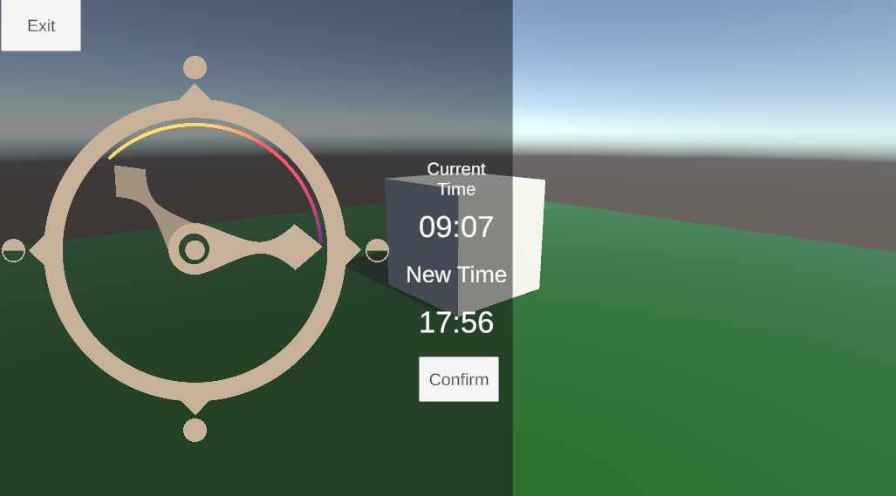

Ellen Liu

Bachelor of Science in Computer Science
California Polytechnic State University
Minor: Computing for Interactive Arts
Projects
Unity Day Cycle
 Try it out hereThis project is an experiment that will demo a Day and Night Cycle in Unity. The user would be able to control the day cycle using a provided UI that can be brought up and hidden with a keystroke / menu. This takes inspiration from a day and night cycle UI from the game Genshin Impact.
PC and VR Chat System
While working at Venu, this was the main feature that I was in charge of refactoring and maintaining. I collaborated with the design team to improve this social feature to primarily improve the efficiency of the tech support team in communicating and troubleshooting issues that may arise with users. Venu being primarily a 3D virtual conferencing platform primarily pushed for voice over communication. With the addition of this social feature, the ease and accessibility of communicating with other users, whether they are attending via a PC or in virtual reality, have improved significantly.
I utililzed Unity and C# to achieve this UI feature with the goal of creating a modular system that can be refactored with ease.
Emoji Spawning System
This is another social feature I enjoyed collaborating with the design team on while working at Venu. This feature utilizes free to use assets and Unity to allow users to better communicate their feelings and a variety of expressions. The emoji spawn system is accessed via a Menu in game. Clicking on a button in the menu spawns the unique corresponding Emoji sprites
ANX Dread: VR Anxiety Experience
This project aims to explore the application of virtual reality in support of furthering studies regarding managing stress and anxiety. Specifically, the system was designed to explore users’ reactions to simple tasks in simulated stressful and fictional settings with respect to specific game elements.
Music and Light
This was a group capstone project for the Computing for Interactive Arts minor. The goal of this project was to create a music reactive light projection-mapped onto the front of the Kennedy Library of the Cal Poly SLO campus. We did our best to overcome the obstacles that came about while working on this project during the COVID-19 pandemic.
This project was achieved through the use of Unity3D and utilizing the library Lasp. By using a combination of particle systems, C# scripts, and blender rendering, we were able to develop a system that adjusts the effects shown depending on the music input.
Gravity Funhouse VR
IllusiVR is a VR experience developed via the use of Unity3D and SteamVR. The goal of this project was to create a house with multiple room and experiment with differing directions of gravity. This project was inspired by Half-Life Alyx.
Code Repository Here